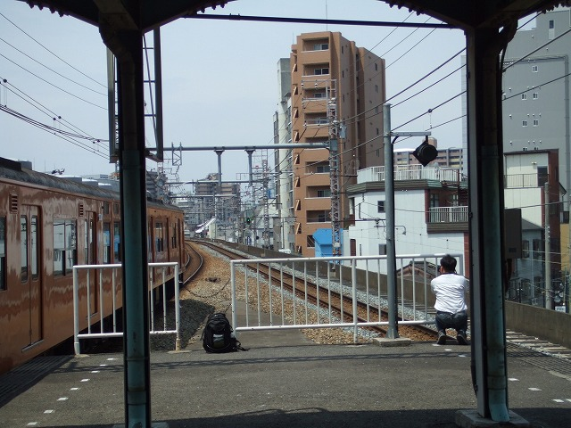

天満の我が家にねずみが来ました。石鹸を齧るねずみではありません。
６月最終週に旦那号が突如ナイロン焦げ付き臭を出し、息絶えました。
折角のボーナスで最初に買ったのがこれ。
今回「マウスコンピューター」で購入しました。OSついてて安かった。
いやー、いいっすよ、マウスコンピューター。筐体あけやすいし、マニュアルも分かりやすいし。
貴重な土日を費やしてセットアップしました。でも愛着でてきたぞ、チュー助
で、どうせ皆さんはこんなネタどうでもいいでしょう。ご期待の写真をお見せしましょう
今回小さいカメラを購入しました。通勤途中の景色をさくっと写すためです。
で、で、勇気を出して取ってみました。
北京氏が中国の駅で隠し撮りする真似をして、朝の天満駅で「腰辺りでこっそりカメラを構える中年女」の私。
なんでこんなことしてんねん、ウチ。うわ～103系きた、撮るで、撮るで～！！！
あかん～指はいってもた～～～～～。
ま、隠し撮りちゅーか、気軽なカメラなので、こういうんも撮りやすいです。

はい、福島駅の鉄オタです。隠し撮りしてやろうと狙ってたんだが、
列車きた途端、こっちなんぞ目もくれねえ。写真撮り放題じゃっ！
はい、もう１人。これは寺田町。いや～ほんと鉄って自分が撮られることなんぞ二の次なんだよなあ。
みんな気ぃつけやあ
しかし、確かに鉄オタがカメラ構えてるところは、いい景色＆光線だな、こうしてみると。
とはいえ、最近徒歩通勤の私。こんな写真ばっかし撮ってます
桜ノ宮駅となりの源八橋真下の駄猫。こんだけ近寄っても逃げません。
何うなってるのかとおもってよく見たら、獲物（インコ！）を挟んだ攻防が。おじゃましました～
都島